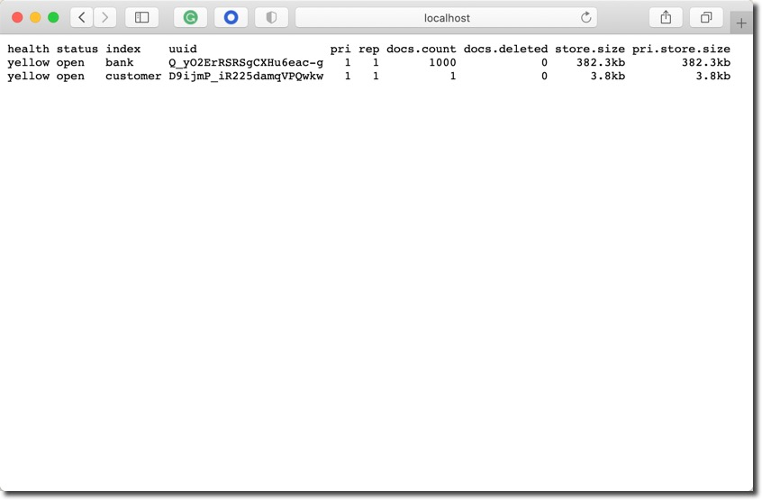
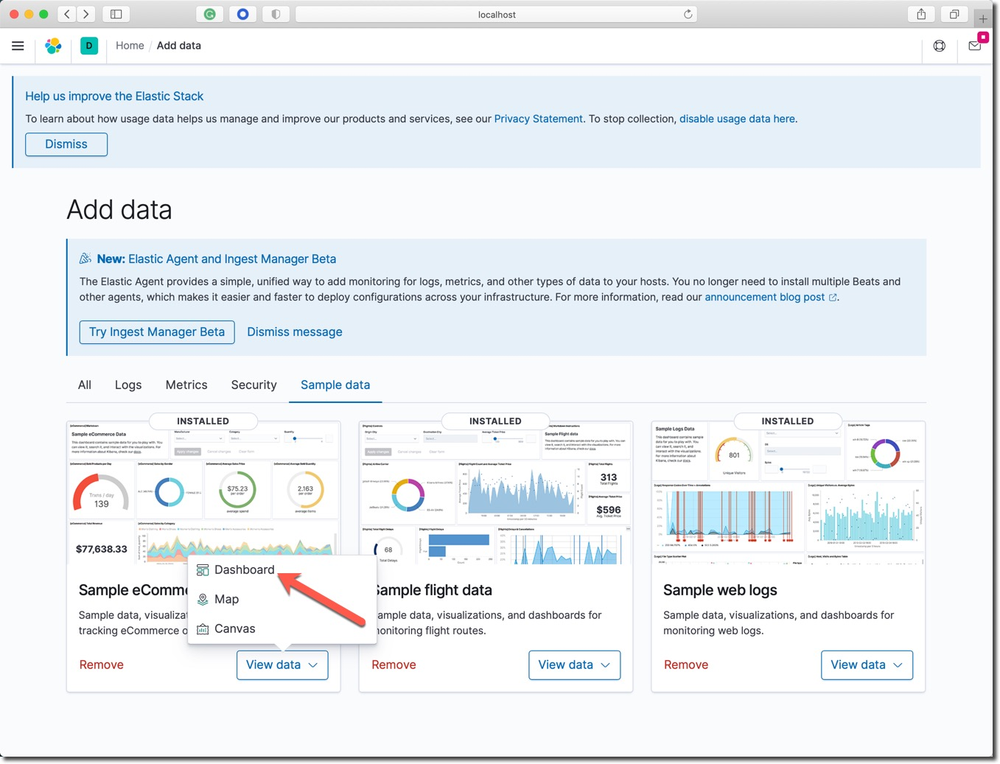
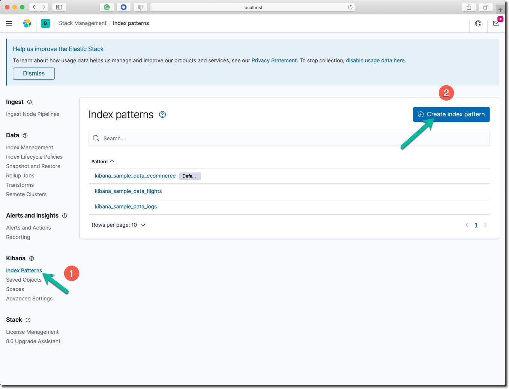
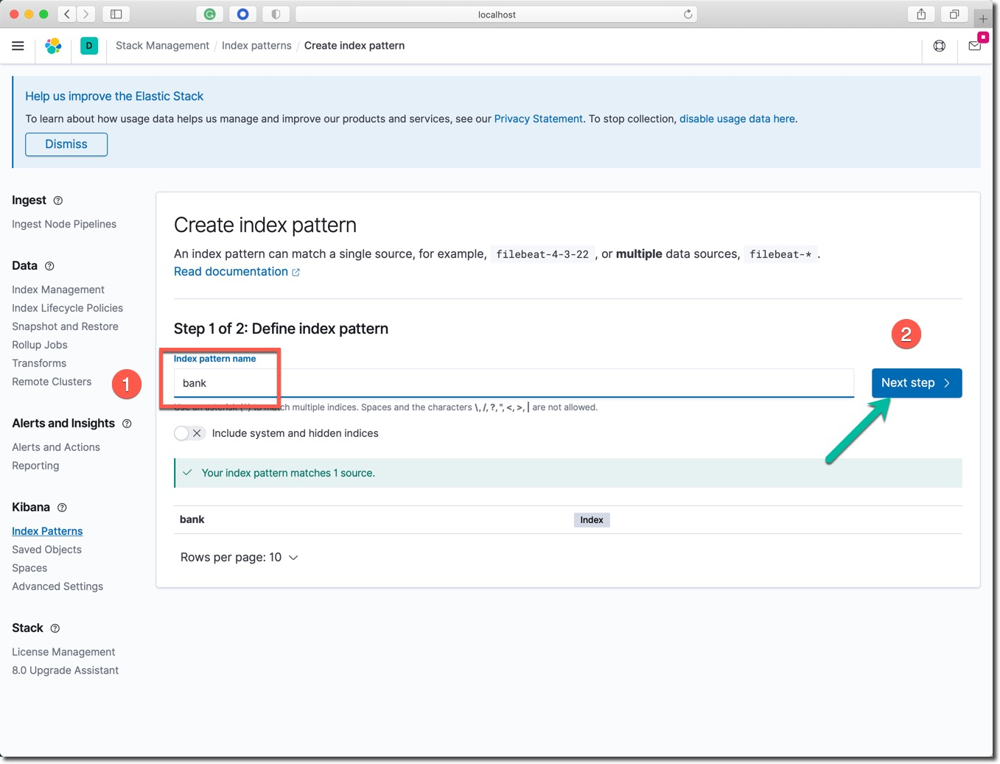
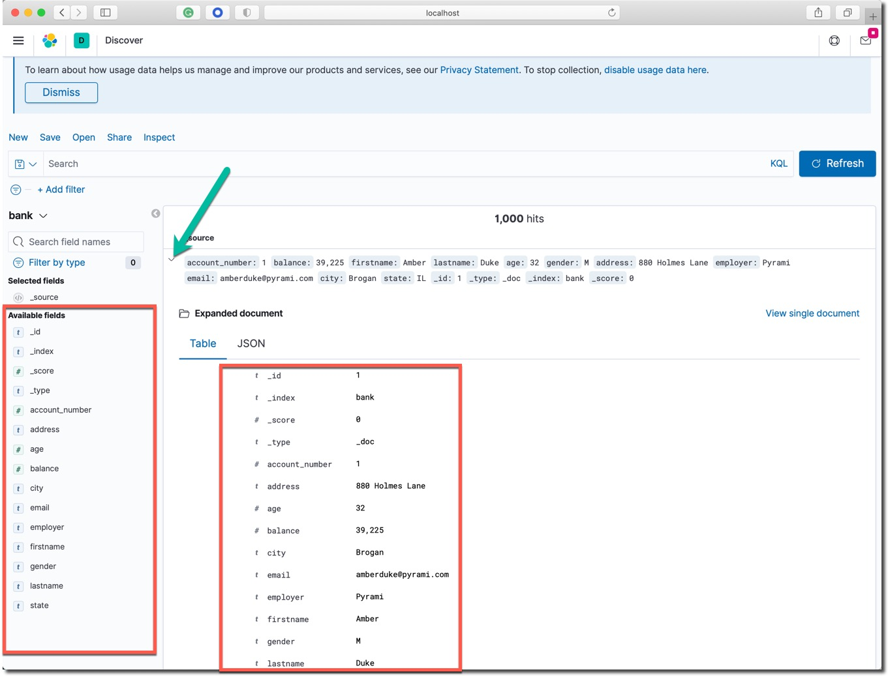

学习收益
你将学习到以下技能：
- 下载并运行 Elasticsearch 服务器
- 在服务器中索引一些文档（使用 _index API）
- 体验搜索查询 （使用 _search API）
- 尝试数据分析聚合 （使用 _search API）
- 下载并运行 Kibana 服务器
本课程的所有程序文件、软件包的下载地址如下：
- 国内的YUM源服务器1：https://mirror.tuna.tsinghua.edu.cn/elasticstack/
- 国内的YUM源服务器2：https://mirrors.cloud.tencent.com/elasticstack/
- 国内的YUM源服务器3：https://mirrors.aliyun.com/elasticstack/
- Elastic 标准YUM源：https://artifacts.elastic.co/downloads/elasticsearch/
参考信息
Elastic 官方参考文档：
- Getting started with Elasticsearch
- Discovery and cluster formation settings
- Bootstrap Checks
- Search your data
- Aggregations
Elastic Stack 包含了我们常说的 ELK 或者 ELKB。如下图所示： 
ELK 是 Elasticsearch、Logstash和Kinina的首字母缩写，ELK Stack是elastic公司三大核心产品的组合方案。

顺利完成本 Lab 的笔记本电脑的软硬件需求如下。
笔记本电脑
- 8GB 内存或更多
- i5 及更高 CPU
- Wifi 或有线网络，能访问互联网。
软件配置
- MacOS、Windows 或者 Linux 操作系统都可以。
- 终端命令行工具软件，例如： iTerm2、Terminal、 cmder for Windows 10。
- curl、wget 或者其他的图形化下载工具。
- 虚拟机运行软件 Virutalbox 或者 VMWare Workstation。
- 创建一个 Linux 虚拟机，内存不小于 4GB，确保虚拟机关闭防火墙软件，所有端口都可以和本机正常通讯。
虚拟机
本实战练习需要一台 CentOS 虚拟机，配置需求如下：
- 版本： CentOS 7 或者 8
- CPU： 2 vCPU
- 内存：最低 4GB， 最好 8 GB
- 磁盘：最低20 GB
- 网络：
- 本地虚拟机：可以被笔记本电脑访问，同时虚拟机也可以访问互联网下载和安装Yum源中的软件
- 云主机：可以从YUM下载安装包，具备公网IP地址，防火墙设置公网可以访问这些端口：TCP9200， TCP5601
使用清华大学的YUM镜像源安装。
sudo yum install -y https://mirror.tuna.tsinghua.edu.cn/elasticstack/yum/elastic-7.x/7.15.1/elasticsearch-7.15.1-x86_64.rpm
在启动 Elasticsearch 服务之前，创建启用安全选项所需的 TLS 数字证书，运行证书创建工具如下所示：
sudo /usr/share/elasticsearch/bin/elasticsearch-certutil cert -out /etc/elasticsearch/elastic-certificates.p12 -pass ""
sudo chmod 660 /etc/elasticsearch/elastic-certificates.p12
sudo ls -l /etc/elasticsearch/elastic-certificates.p12
将 Elasticsearch 默认的配置文件内容更新为如下内容。
# ---------------------------------- Cluster -----------------------------------
cluster.name: elk-es01
# ----------------------------------- Paths ------------------------------------
path.data: /var/lib/elasticsearch
path.logs: /var/log/elasticsearch
# ---------------------------------- Network -----------------------------------
network.host: 0.0.0.0
# --------------------------------- Discovery ----------------------------------
discovery.type: single-node
# ------------------------------- TLS and Cert ---------------------------------
xpack.security.enabled: true
xpack.security.transport.ssl.enabled: true
xpack.security.transport.ssl.verification_mode: certificate
xpack.security.transport.ssl.keystore.path: elastic-certificates.p12
xpack.security.transport.ssl.truststore.path: elastic-certificates.p12
# ------------------------------- Security ---------------------------------
xpack.security.authc.api_key.enabled: true
xpack:
security:
authc:
realms:
native:
native1:
order: 0
# ------------------------------- App Search ---------------------------------
action.auto_create_index: ".app-search-*-logs-*,-.app-search-*,+*"
用以上配置内容，创建名为 ‘sec.yml' 的配置文件，替换默认 ‘elasticsearch.yml' 配置文件的内容（下面用 cp 命令覆盖默认配置文件的方式更新默认配置文件，后续的所有配置更新都会使用这个方式）。然后启动 Elasticsearch 服务。
sudo cp sec.yml /etc/elasticsearch/elasticsearch.yml
sudo systemctl daemon-reload
sudo systemctl enable elasticsearch.service
sudo systemctl start elasticsearch.service
sudo systemctl status elasticsearch
使用 sudo tail -f /var/log/elasticsearch/elk-es01.log 命令查看当前 Elasticsearch 服务的日志。
初始化 ES 服务器内建用户的密码。
sudo /usr/share/elasticsearch/bin/elasticsearch-setup-passwords interactive -b
将本练习所使用的默认密码 security123 复制到剪切板，这条命令的每一个提示符出现的位置，用快捷键粘贴输入这个密码之后，按回车输入该密码，用这个方式给所有系统内置账号设置了相同的密码（纯粹测试目的，并不建议这么做）。以上命令的输出如下：
Enter password for [elastic]:
Reenter password for [elastic]:
Enter password for [apm_system]:
Reenter password for [apm_system]:
Enter password for [kibana_system]:
Reenter password for [kibana_system]:
Enter password for [logstash_system]:
Reenter password for [logstash_system]:
Enter password for [beats_system]:
Reenter password for [beats_system]:
Enter password for [remote_monitoring_user]:
Reenter password for [remote_monitoring_user]:
Changed password for user [apm_system]
Changed password for user [kibana_system]
Changed password for user [kibana]
Changed password for user [logstash_system]
Changed password for user [beats_system]
Changed password for user [remote_monitoring_user]
Changed password for user [elastic]
在浏览器中访问 http://IP-address:9200/ ，测试 Elasticsearch 服务是否正常，确认上面配置的 elastic 用户的密码 security123 登录。
ssh 等了到Linux操作系统，在一个新的命令行窗口中用 curl 命令行工具测试 Elasticsearch 集群服务的状态。
使用下面的命令查看Elasticsearch服务的基本信息。
curl --user elastic:security123 -X GET http://localhost:9200
{
"name" : "node1",
"cluster_name" : "1m-only",
"cluster_uuid" : "LvHOXakFTby0-uPwq_Ekiw",
"version" : {
"number" : "7.9.3",
"build_flavor" : "default",
"build_type" : "tar",
"build_hash" : "c4138e51121ef06a6404866cddc601906fe5c868",
"build_date" : "2020-10-16T10:36:16.141335Z",
"build_snapshot" : false,
"lucene_version" : "8.6.2",
"minimum_wire_compatibility_version" : "6.8.0",
"minimum_index_compatibility_version" : "6.0.0-beta1"
},
"tagline" : "You Know, for Search"
}
查看集群的状态信息。Linux (SSH 登陆之后) 和 macOS:
curl --user elastic:security123 -X GET http://localhost:9200/_cat/nodes\?v
应该看到类似于下面的输出。
ip heap.percent ram.percent cpu load_1m load_5m load_15m node.role master name
127.0.0.1 17 97 7 2.05 dilmrt * node1
上面的 master 那一列下面的值为 * 号，表明节点 node1 是主节点。
在浏览器中验证 Elasticsearch 集群服务的状态，打开浏览器中访问这个网址 http://IP_ADDRESS:9200 。或者访问本地虚拟机的 IP 地址，或者云主机的公网IP地址，例如：http://192.168.50.11:9200 ，访问结果应如下图所示：

然后尝试访问这个网址 http://IP_address:9200/_cat/nodes\?v 。
索引单个和返回单个文档
索引一个文档，该文档只具有一个键值对数据 "name": "John Doe" 。
curl --user elastic:security123 -X PUT "localhost:9200/customer/_doc/1?pretty" -H 'Content-Type: application/json' -d'
{
"name": "John Doe"
}
'
注意：以上命令最后一行还有一个单引号。
以上命令的返回结果如下：
{
"_index" : "customer",
"_type" : "_doc",
"_id" : "1",
"_version" : 1,
"result" : "created",
"_shards" : {
"total" : 2,
"successful" : 1,
"failed" : 0
},
"_seq_no" : 0,
"_primary_term" : 1
}
以上的命令创建了名称为 customer 的新索引，并保存了第一个编号为 1 的文档。
用下面的命令取回这个编号为 1 的文档。
curl --user elastic:security123 -X GET "localhost:9200/customer/_doc/1?pretty"
返回的结果如下：
{
"_index" : "customer",
"_type" : "_doc",
"_id" : "1",
"_version" : 1,
"_seq_no" : 0,
"_primary_term" : 1,
"found" : true,
"_source" : {
"name" : "John Doe"
}
}
批量索引文档
在有大量文档的时候，可以使用 buck API 进行批量索引（导入）的操作。
确认软件包目录下有一个名为 account.json 的文件。否则根据下面的提示下载该文件。
下载测试数据文件 accounts.json ，这个文件中有一千条人工生成的数据。
或者在Linux 的操作系统中使用命令下载该文件。
curl -O https://github.com/elastic/elasticsearch/blob/master/docs/src/test/resources/accounts.json
将 account.json 文件下载到测试目录中，用文本编辑器打开浏览确认，或者在 Linux 系统中执行命令 cat account.json。这个文件中有一千条数据记录。
在命令行中，进入以上测试数据文件的目录中，运行下面的两条命令。
curl --user elastic:security123 -H "Content-Type: application/json" -XPOST "localhost:9200/bank/_bulk?pretty&refresh" --data-binary "@accounts.json"
curl --user elastic:security123 "localhost:9200/_cat/indices?v"
以上命令的结果，最后三行应该如下所示：
health status index uuid pri rep docs.count docs.deleted store.size pri.store.size
yellow open bank Q_yO2ErRSRSgCXHu6eac-g 1 1 1000 0 382.2kb 382.2kb
yellow open customer D9ijmP_iR225damqVPQwkw 1 1 1 0 3.8kb 3.8kb
上面的结果表明：当前的集群中已经创建了两个索引 bank 和 customer ; 名为 bank 的索引显示文档数为 1000，这就是刚才用 bulk API 导入的数据。
如果在浏览器中访问这个网址 http://IP_ADDRESS:9200/_cat/indices?v 也可以看到如下相同结果。

搜索 1
说明：
- 目标 bank 索引
- 搜索所有文档
- 结果按 account_number 字段升序排列
在命令行执行下面的命令。
curl --user elastic:security123 -X GET "localhost:9200/bank/_search?pretty" -H 'Content-Type: application/json' -d'
{
"query": { "match_all": {} },
"sort": [
{ "account_number": "asc" }
]
}
'
执行结果解释：
- took – Elasticsearch 执行本次查询使用了多少毫秒
- timed_out – 是否查询超时
- _shards – 有多少个数据分片参与了本次搜索，按成功、略过和失败计数
- max_score – 找到的最相关文档的相关度分数
- hits.total.value - 找到了多少个相关文档
- hits.sort - 文档排序字段位置(在没有设置的时候用相关度分数排序)
- hits._score 文档的相关度分数（在 match_all 时不适用）
以上命令返回了搜索结果的整体概述信息和第一页（前 10 条文档）的搜索结果。
搜索 2
说明：
- 目标 bank 索引
- 搜索所有文档
- 从返回结果中取出第 10 到 19 个文档。
- from 结果的起始位置
- size 返回的数据条数
在命令行执行下面的命令。
curl --user elastic:security123 -X GET "localhost:9200/bank/_search?pretty" -H 'Content-Type: application/json' -d'
{
"query": { "match_all": {} },
"sort": [
{ "account_number": "asc" }
],
"from": 10,
"size": 10
}
'
执行结果解释：
- 在 1000 个文档中成功的搜索到 10 个文档
- 返回结果中 _id 从 10 滚动到 19
- 工返回 10 个文档
搜索 3
说明：
- 目标 bank 索引
- 搜索所有地址中还有
mill和lane关键词的文档
在命令行执行下面的命令。
curl --user elastic:security123 -X GET "localhost:9200/bank/_search?pretty" -H 'Content-Type: application/json' -d'
{
"query": { "match": { "address": "mill lane" } }
}
'
执行结果解释：
- 在 1000 个文档中成功的搜索到 19 个文档
- 返回结果中观察
address这个字段的返回值 - 默认只显示前 10 条数据
- 文档相关性最高分是 9.507477
- 相关性最高的文档，address 字段中同时包含了
mill和lane两个关键词。
搜索 4
说明：
- 目标 bank 索引
- 搜索所有年龄为 40 且不居住在 ‘ID' 州的账号。
在命令行执行下面的命令。
curl --user elastic:security123 -X GET "localhost:9200/bank/_search?pretty" -H 'Content-Type: application/json' -d'
{
"query": {
"bool": {
"must": [
{ "match": { "age": "40" } }
],
"must_not": [
{ "match": { "state": "ID" } }
]
}
}
}
'
执行结果解释：
- 在 1000 个文档中成功的搜索到 43 个文档
- 返回结果中观察
age这个字段的都是40 - 返回结果中观察
state这个字段的值都不是ID
搜索 5
说明：
- 目标 bank 索引
- 搜索所有账号
- 返回账户余额金额
balance在 20000 到 30000 之间的数据
在命令行执行下面的命令。
curl --user elastic:security123 -X GET "localhost:9200/bank/_search?pretty" -H 'Content-Type: application/json' -d'
{
"query": {
"bool": {
"must": { "match_all": {} },
"filter": {
"range": {
"balance": {
"gte": 20000,
"lte": 30000
}
}
}
}
}
}
'
执行结果解释：
- 在 1000 个文档中成功的搜索到 217 个文档
- 在返回结果中观察
balance的数值是否满足搜索条件
聚合运算 1
说明：
- 不是设置任何搜索条件，在所有文档中做聚合运算
- 不返回任何文档 size = 0
- 用 state 作为关键字分组查询结果
在命令行执行下面的命令。
curl --user elastic:security123 -X GET "localhost:9200/bank/_search?pretty" -H 'Content-Type: application/json' -d'
{
"size": 0,
"aggs": {
"group_by_state": {
"terms": {
"field": "state.keyword"
}
}
}
}
'
执行结果解释：
- hits 总共搜索了 1000 个文档
- 在 aggregations 查看每个州的银行账户总个数
聚合运算 2
说明：
- 不是设置任何搜索条件，在所有文档中做聚合运算
- 不返回任何文档 size = 0
- 用 state 作为关键字分组查询结果
- 计算每个州银行账户里的余额的平均值
- 默认以每个州的账户数量排序结果
在命令行执行下面的命令。
curl --user elastic:security123 -X GET "localhost:9200/bank/_search?pretty" -H 'Content-Type: application/json' -d'
{
"size": 0,
"aggs": {
"group_by_state": {
"terms": {
"field": "state.keyword"
},
"aggs": {
"average_balance": {
"avg": {
"field": "balance"
}
}
}
}
}
}
'
执行结果解释：
- 结果同上一个聚合
- 另外增加了每个州的所有银行账户的余额求平均值运算
聚合运算 3
说明：
- 其它功能同上
- 用每个州的平均账户余额从大到小排序结果
在命令行执行下面的命令。
curl --user elastic:security123 -X GET "localhost:9200/bank/_search?pretty" -H 'Content-Type: application/json' -d'
{
"size": 0,
"aggs": {
"group_by_state": {
"terms": {
"field": "state.keyword",
"order": {
"average_balance": "desc"
}
},
"aggs": {
"average_balance": {
"avg": {
"field": "balance"
}
}
}
}
}
}
'
执行结果解释：
- 观察 bucket 里的聚合结果
- 按每个州的所有银行账户的平均值倒排序
执行 Kibana 安装命令，如下所示：
sudo yum install -y https://mirror.tuna.tsinghua.edu.cn/elasticstack/yum/elastic-7.x/7.15.0/kibana-7.15.0-x86_64.rpm
准备预配置的 Kibana 的配置文件，如下：
server.host: "0.0.0.0"
elasticsearch.hosts: ["http://localhost:9200"]
elasticsearch.username: "kibana_system"
elasticsearch.password: security123
enterpriseSearch.host: 'http://localhost:3002'
i18n.locale: zh-CN
xpack.security.enabled: true
xpack.security.encryptionKey: "fhjskloppd678ehkdfdlliverpoolfcr"
xpack.encryptedSavedObjects.encryptionKey: "Si0gjCjujZ0LghDiApKJfGhGeVJ8JwxrY1z7rOpBva"
上见示例配置文件 kb.yml。如果你使用的其它自定义的 IP 地址，请注意在后续的所有操作中替换它。
更新默认配置文件，用以上示例配置文件覆盖 Kibana 默认配置文件，然后启动 Kibana 服务。
cp /etc/kibana/kibana.yml /etc/kibana/kibana.yml.bk
cp kb.yml /etc/kibana/kibana.yml
systemctl start kibana.service
systemctl status kibana.service
查看 Kibana 服务的日志是否正常。
sudo tail -f /var/log/messages
在浏览器里测试登录 Kibana 的IP地址 http://192.168.50.11:5601 ，使用 elastic 用户名和密码 security123。点击主页上的"安全"的链接，你应该看到如下的界面。

启用企业版许可 30 天试用
点击 Kibana 左上角菜单中点击 "Stack Management" –> "许可管理"，点击 "开始试用" 按钮，启用 30 天的高级功能的试用期。
登录 Kibana 控制台导入&查看示例数据
到目前为止，Elasticsearch 集群运行在无密码的开发模式，因此无需输入用户名和密码。
打开浏览器访问网址 localhost:5601 或者虚拟机的 IP 地址，例如 192.168.50.11:5601； 登陆后点击"添加数据"按钮。然后点击页面中的"样例数据"标签页，进入样例数据导入界面。

分别点击这三个按钮「添加数据」，导入三组示例数据。

点击 Dashboard 查看数据分析仪表板。
创建 bank 索引模式&查看数据【可选实践】
【这一部分练习可以略过】 为了在图形界面中创建用于分析 bank 索引中所有数据的"索引模式"。

点击左上角的按钮打开左侧菜单，点击 Stack Management 菜单。

在 Kibana 管理选项中，点击创建【索引模式】按钮。

在索引模式名称中输入 bank ， 点击先一步直到创建完成。

点击左上角的按钮，打开左侧菜单栏，点击 Kibana 部分的 Discover 链接。

点击左侧的向下三角图标，打开索引选择菜单，选中刚才创建的 bank 索引模式。

参考左侧的可用字段，这是 bank 索引的所有字段。点击第一条数据的向下按钮，查看该文档。